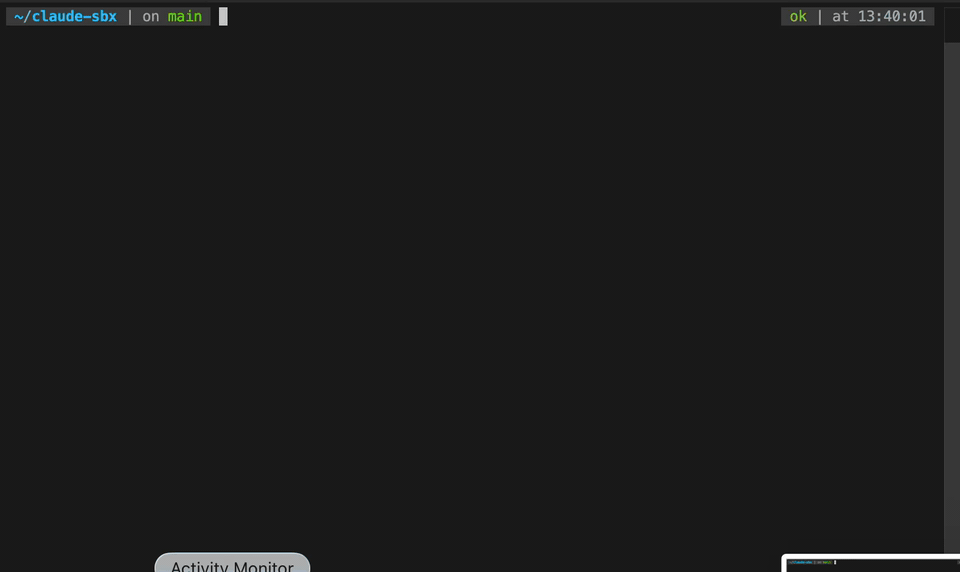

Let coding agents run. Keep your machine behind the airlock.
Run Claude Code, Codex, OpenCode, and other coding agents inside disposable Docker Sandbox microVMs. Review their work as ordinary Git commits before anything reaches your local branch.
npm install -g code-airlock
MIT licensed · Open source
~/code/my-project
read-only while agent runs
sandbox-sbx-my-project
running
You decide when it lands on your branch.
Agents work better with room to work
Coding agents are most useful when they can install dependencies, run test suites, inspect generated files, start local services, read logs, and iterate on failures. Approving every shell command turns the agent into a slower autocomplete loop.
That freedom needs a stronger boundary
Code Airlock places the isolation boundary below the agent's own permission system. The agent runs inside a disposable microVM with a private clone of your repository. The host checkout stays read-only, and every change comes back as a Git commit for review.
Why use it
Run agents unattended
Start an agent inside a sandbox and let it work through a task with fewer approval interruptions. It can install packages, run commands, and start services inside the VM.
Keep the host repository read-only
Clone mode gives the sandbox a private repository clone. The agent commits there, and it cannot directly modify your host checkout while it runs.
Review ordinary Git commits
Fetch the sandbox branch, inspect the diff, open a visual review in your difftool, and merge only after you approve the changes.
Control network access
Use Docker Sandbox network policies and a configurable allowlist for model APIs, package registries, GitHub, and other services the task actually needs.
How it works
-
Launch
code-airlock upCode Airlock starts the selected agent in a Docker Sandbox microVM.
-
Clone
Docker creates a private clone of the current repository inside the sandbox. Your host checkout stays read-only.
-
Work
The agent installs dependencies, edits files, runs tests, inspects errors, and commits its work inside the clone.
-
Review
code-airlock fetch
code-airlock diff
code-airlock reviewThe sandbox commits are fetched into the host repository for inspection, as a normal Git branch.
-
Merge
code-airlock mergeYou decide when the changes are ready to enter your local branch.
Quick start
One install, one command to launch, and an ordinary Git review to finish.
# Install
$ npm install -g code-airlock
# Check the environment
$ code-airlock doctor
# Preview the commands without running them
$ code-airlock --dry-run up
# Start Claude Code in the sandbox
$ code-airlock up
# Review the result from the host
$ code-airlock fetch
$ code-airlock diff
$ code-airlock review
$ code-airlock merge# Store Codex credentials via Docker Sandbox secrets
$ sbx secret set -g openai --oauth
# Start Codex in the sandbox
$ AGENT=codex code-airlock up
# Headless run: approvals off, the microVM is the boundary
$ AGENT=codex code-airlock up -- --dangerously-bypass-approvals-and-sandbox "fix the build"
# Review the result from the host
$ code-airlock fetch
$ code-airlock diff
$ code-airlock merge# Store the provider keys you use
$ sbx secret set -g anthropic
$ sbx secret set -g openai
# Start OpenCode in the sandbox
$ AGENT=opencode code-airlock up
# Review the result from the host
$ code-airlock fetch
$ code-airlock diff
$ code-airlock merge# Keep the agent running after SSH disconnects
$ code-airlock --tmux up
# Detach: Ctrl-b, then d. Reattach later:
$ code-airlock attach
# Unattended run: start detached
$ code-airlock --tmux-detached up
# Check this repo's sandbox and tmux session
$ code-airlock statusSee the workflow in action

Layers, not replacements
Agent permissions, project instructions, and approval rules stay useful. Code Airlock adds a disposable VM, a separate repository clone, network policy controls, and a host-side Git review step underneath them.
None of this makes running arbitrary agent output risk-free. It narrows what a misbehaving agent can reach.
A small wrapper around a strong primitive
Code Airlock is intentionally a thin wrapper around Docker Sandboxes, not a replacement for it. Reach for sbx directly when you want full control over sandbox lifecycle, policies, kits, and one-off experiments.
Code Airlock packages the common coding-agent loop into repeatable commands:
- Stable sandbox naming per repository
- Clone mode by default
- One-command agent startup
AGENTS.mdscaffolding- Opt-in config seeding
- Fetch, diff, visual review, and merge
- Remote runs through tmux
- Configurable network allowlist
Keep the boundary narrow
The microVM is the boundary
Isolation comes from the Docker Sandbox microVM, not from the agent's own permission model.
The host repo stays read-only
Clone mode keeps your host repository mounted read-only while the agent runs.
Allowed hosts are egress paths
Keep the network allowlist as narrow as the task allows. Anything on it is reachable from inside the sandbox.
Scope credentials narrowly
Supply credentials through Docker Sandbox secret management, and only the ones the task truly requires.
Commit before it counts
Sandbox work must be committed before fetch and review can bring it back through the normal workflow.
Removal deletes the clone
Removing a sandbox deletes its private clone. Fetch or push anything you want to keep first.
Requirements
- macOS on Apple Silicon
- Linux with KVM enabled
- Windows 11 with Hypervisor Platform, under WSL2
- Git
- Docker Sandboxes CLI (
sbx)
Give the agent room to work.
Keep control of what lands.
npm install -g code-airlock